Back
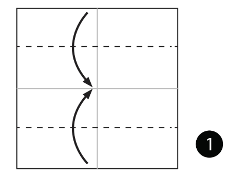
STEP1: Fold and unfold the paper in half both ways. Then fold the top and bottom to the centre.
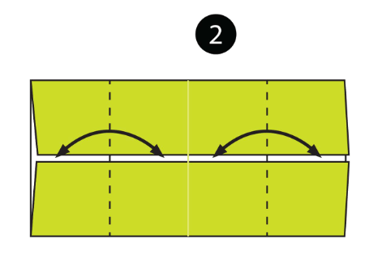
STEP2:Fold and unfold both sides to the centre.
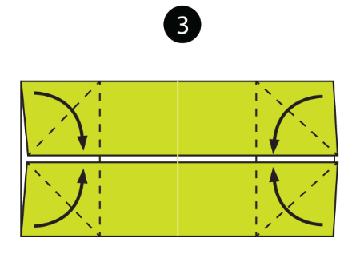
STEP3: Fold all the corners down along the diagonal dotted lines.
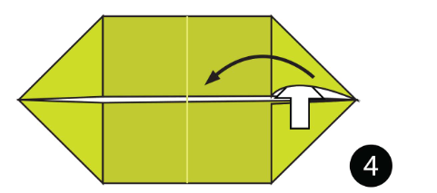
STEP4:Open up each corner and Squash Fold them flat. See the next step to see how each corner looks after the Squash Fold.
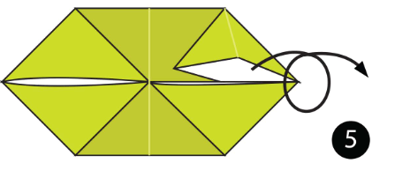
STEP5: Turn the paper over.
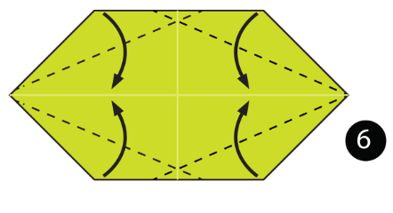
STEP6:Fold the edges of the paper down along the dotted lines.
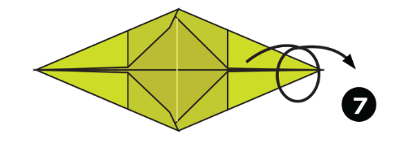
STEP7: Turn the paper over.
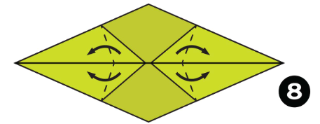
STEP8: Fold the 4 flaps of paper out along the dotted lines.
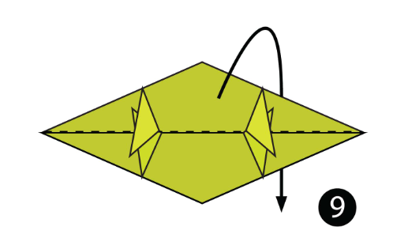
STEP9: Fold the paper in half over to the back.
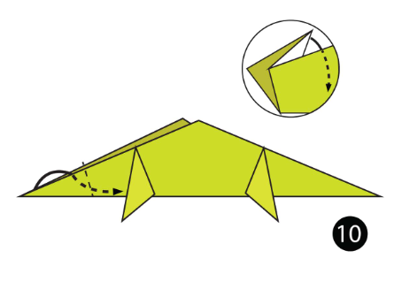
STEP10:Inside Reverse Fold the paper up along the dotted line.
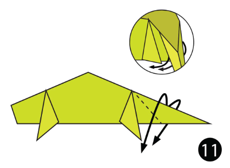
STEP11:Outside Reverse Fold the other side of the model down along the dotted line to form the tail
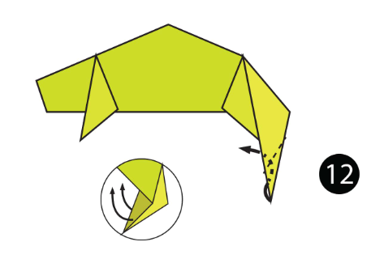
STEP12: Make another Outside Reverse Fold on the end of the tail.
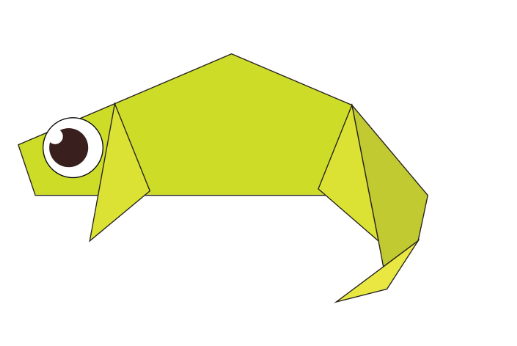
STEP13:The complete origami chameleon
here is a vedio for your reference